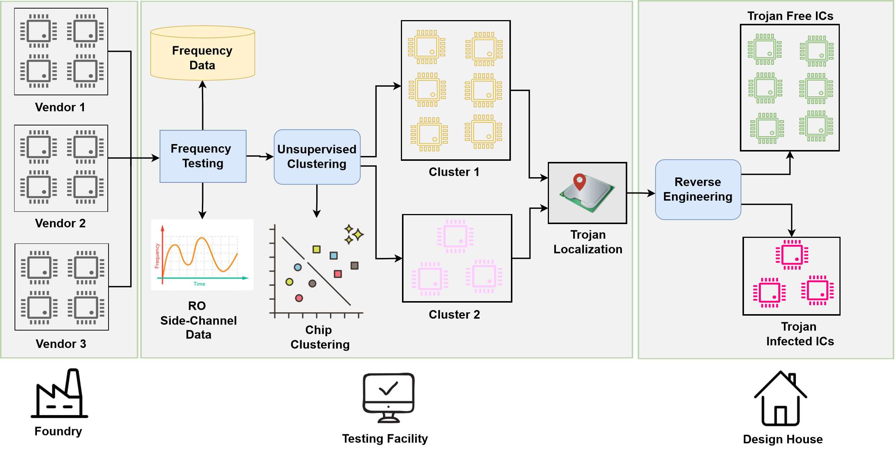

Hardware SecurityAISide-Channel
Golden-Free AI-Assisted Hardware Trojan Detection
Built ML pipelines using side-channel data from Ring Oscillator Networks, feature extraction, unsupervised clustering, dimensionality analysis, and anomaly detection.
Python · scikit-learn · NumPy · pandas · FPGA
ACM JETC, 2025
ACM DOI →